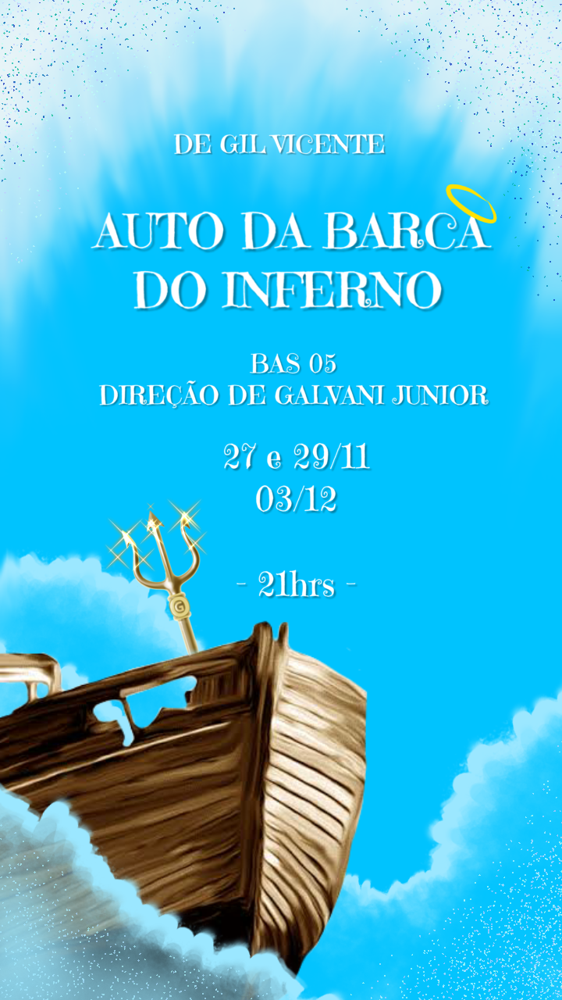
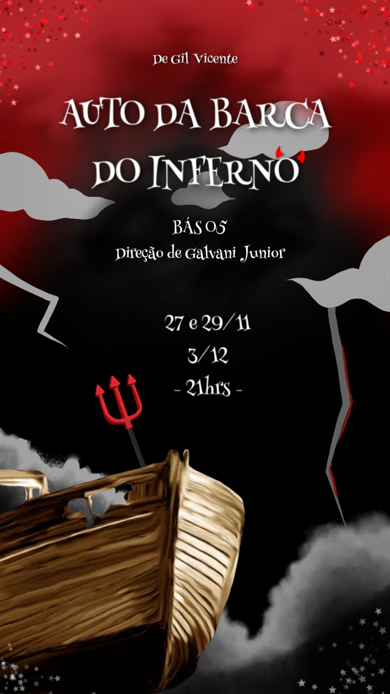
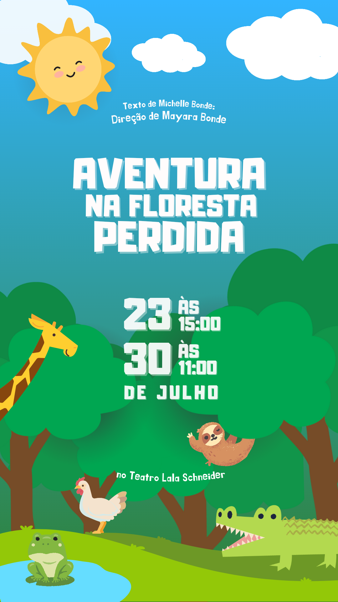
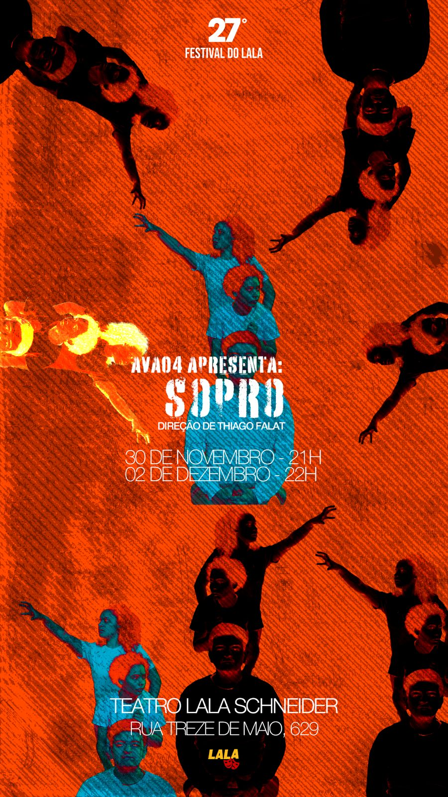
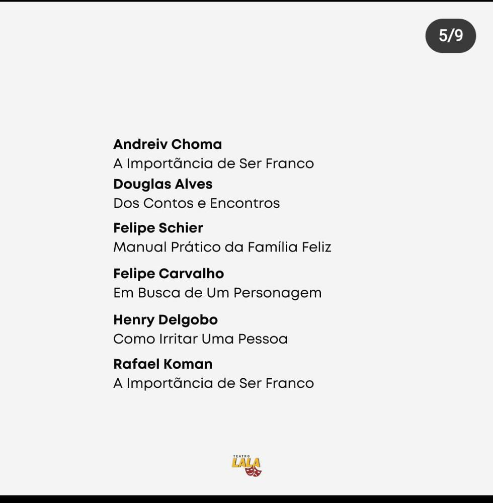
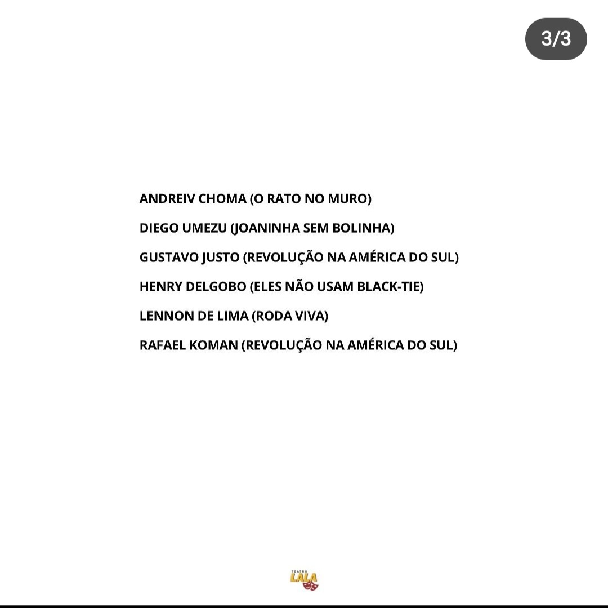

Biografia
Com uma trajetória sólida no teatro e uma paixão por contar histórias, eu, Henry Delgobo, sou um ator dedicado com 4 anos de experiência em cursos de teatro. Iniciei minha formação no Teatro Atuarte, onde participei de um curso gratuito para iniciantes. A busca por aprimoramento me levou ao Teatro Lala Schneider em Curitiba, o mais renomado teatro do Paraná, onde completei um curso profissionalizante de 3 anos. Durante minha formação, atuei em 8 peças, desenvolvendo uma capacidade excepcional de memorizar roteiros e marcações rapidamente. Tenho habilidades de improvisação, criando marcações na hora quando necessário, sempre com a aprovação do diretor. Além de minha experiência como ator, também sou roteirista, com 11 roteiros de filmes já escritos porem ainda nenhum lançado. Meu objetivo é expandir minha carreira para o audiovisual, sem deixar de lado o palco. Estou ansioso para explorar novos públicos e desafios no cinema e na televisão, trazendo a mesma dedicação e paixão que tenho pelo teatro.


Redes Sociais
- Instagram: @henrydelgobo
Link:
https://www.instagram.com/henrydelgobo/
- Tik Tok: @henrydelgobo53
Link: https://tiktok.com/@henrydelgobo53
- Elenco Digital: Henry Delgobo
Características Físicas
- Altura: 1.65
- Peso: 66
- Calçado: 41
- Manequim/Tamanho: 42
- Camisa: G
- Cor dos Olhos: Azul
- Cor dos Cabelos: Loiro
- Informações Adicionais: Eu sou cardíaco, tenho uma cirurgia no meu peito!
- Sotaque Natural: Sulista


Habilidades
- Baterista (Instrumento)
- Cantor Gospel
- Comediante (Amador, faço algumas piadas mas não profissionalmente)
- Compositor
- Roteirista
- Entendo um pouco de computador (T.I, programador...)
Peças Teatrais
- Peça: Uma viagem estranha
- Personagem: Super-Herói
- Ano: 2019
- Direção: Karina Rozek
- Teatro: Atuarte
- Sinopse: Em "Uma Viagem Estranha", um super-herói improvável une forças com um motorista particular e um excêntrico aliado com superpoderes. Juntos, eles embarcam em uma jornada surreal para enfrentar um traficante perigoso e seu aliado alienígena. Esta peça mistura ação, comédia e suspense, explorando o poder da amizade e a coragem necessária para confrontar inimigos de outro mundo. Uma aventura cativante que desafia as expectativas e leva o público a uma viagem verdadeiramente fora do comum.


- Peça: João e Maria
- Personagem: João
- Ano: 2019
- Direção: Karina Rozek
- Teatro: Atuarte
- Sinopse: Após perderem seus pais para uma bruxa maligna na infância, João e Maria crescem determinados a vingá-los. Transformados em habilidosos caçadores de bruxas, eles dedicam suas vidas a rastrear e eliminar essas criaturas sombrias. A missão mais importante e perigosa, porém, é encontrar e destruir a bruxa responsável pela morte de seus pais. Uma história de vingança, coragem e laços familiares, "João e Maria" é uma emocionante jornada contra o mal.
- Peça: Como irritar uma pessoa
- Personagem: Homem da plateia e narrador
- Ano: 2021
- Direção: Fernanda Bahl
- Teatro: Lala Schneider
- Sinopse: "Como Irritar uma Pessoa" é uma peça composta por esquetes hilariantes, cada uma explorando diferentes e criativas formas de irritar alguém. Com situações cotidianas exageradas e personagens caricatos, cada cena revela os pequenos e grandes aborrecimentos que todos enfrentamos. Desde interrupções incessantes e barulhos irritantes até mal-entendidos absurdos, a peça oferece uma divertida e perspicaz visão dos comportamentos humanos que testam nossa paciência. Prepare-se para rir e se reconhecer nas mais diversas maneiras de perder a calma!


- Peça: Ta inverno no inferno
- Personagem: Traficante Gabriel
- Ano: 2021
- Direção: Lucas Cardoso
- Teatro: Lala Schneider
- Sinopse: "Ta Inverno no Inferno" narra a trágica história de Joana, explorando os eventos que levaram à sua morte. A peça mergulha no relacionamento intenso e perigoso entre Joana e Gabriel, o implacável chefe do tráfico. Em meio a um ambiente de violência e desespero, Joana busca amor e redenção, mas encontra-se presa nas garras do crime e da traição. Com uma atmosfera tensa e envolvente, "Ta Inverno no Inferno" revela a luta desesperada de uma mulher contra seu destino em um mundo onde a esperança parece não ter lugar.
- Peça: Eles não usam black-tie
- Personagem: Chiquinho
- Ano: 2022
- Direção: Rafael Menezes
- Teatro: Lala Schneider
- Sinopse: Baseado no filme, a peça teatral "Eles Não Usam Black-Tie" expõe a fragilidade da condição humana e os conflitos ideológicos dentro de uma família. A peça gira em torno do embate entre Otávio, um operário socialista e revolucionário, e seu filho Tião. Otávio, fervoroso defensor do movimento grevista, enfrenta a resistência de Tião, que, criado longe da favela, não compartilha do mesmo ideal e deseja escapar da pobreza ao lado de Maria, sua noiva grávida. Tião teme mais a miséria do que o confronto político, o que gera tensão com seu pai. A peça destaca também outros personagens que refletem os valores e as perspectivas da comunidade humilde em que vivem. "Eles Não Usam Black-Tie" é uma obra poética que oferece um olhar profundo sobre a sociedade brasileira, sendo um marco na dramaturgia nacional.


- Peça: Auto da barca do inferno
- Personagem: Corregedor
- Ano: 2022
- Direção: Galvani Carraro Junior
- Teatro: Lala Schneider
- Sinopse: "Auto da Barca do Inferno" é uma peça que reúne diversas histórias de pessoas que, após a morte, encontram-se no purgatório, aguardando julgamento para seu destino final: céu ou inferno. Cada personagem revela sua vida e os motivos que os levaram até ali, enquanto confronta seus pecados e virtudes. Em um cenário onde o humor e a crítica social se entrelaçam, a peça questiona os valores humanos e as escolhas feitas em vida. Uma jornada reflexiva e envolvente que deixa o público a pensar: você sabe para onde vai?


- Peça: Aventura na floresta perdida
- Personagem: Darwin
- Ano: 2023
- Direção: Mayara Bonde
- Teatro: Lala Schneider
- Sinopse: "Aventura na Floresta Perdida" é uma encantadora peça infantil que conta a história de uma floresta onde diversos animais vivem em harmonia, exceto por Tonhão, o jacaré malvado que guarda o único lago e não deixa ninguém se aproximar. A paz da floresta é ameaçada pela atitude de Tonhão, que impede os outros animais de beberem água. No entanto, tudo muda quando Tonhão sofre uma terrível dor de dente e, desesperado, precisa pedir ajuda aos amigos que ele sempre afastou. Em uma reviravolta emocionante, os animais se unem para ajudar Tonhão, e juntos descobrem o valor da amizade e da cooperação. No final, Tonhão se transforma e todos os animais passam a compartilhar a água do lago, vivendo felizes e unidos. Uma história de redenção, bondade e companheirismo que encanta e ensina lições valiosas às crianças.
- Peça: Sopro
- Personagem: Velho do Saco e Antônio
- Ano: 2023
- Direção: Thiago Falat
- Teatro: Lala Schneider
- Sinopse: "Sopro" acompanha a jornada de Messias, que retorna às suas raízes no sertão e confronta o passado através das memórias do lugar onde nasceu e foi criado. As lendas locais se entrelaçam com os dilemas pessoais daqueles que marcaram sua infância, criando uma narrativa rica e complexa. As lembranças, sempre caprichosas e nem sempre confiáveis, embaralham o tempo e as ideias, oferecendo um retrato sensível, saudosista e por vezes amargo das experiências que moldaram sua vida. "Sopro" é um mergulho poético e introspectivo nas passagens que definem quem somos.


Indicações/Prêmios
- Melhor ator (Indicação):
- Ano: 2021
- Peça: Como irritar uma pessoa
- Personagem: Homem da plateia
- Melhor ator (Indicação):
- Ano: 2022
- Peça: Eles não usam black-tie
- Personagem: Chiquinho
